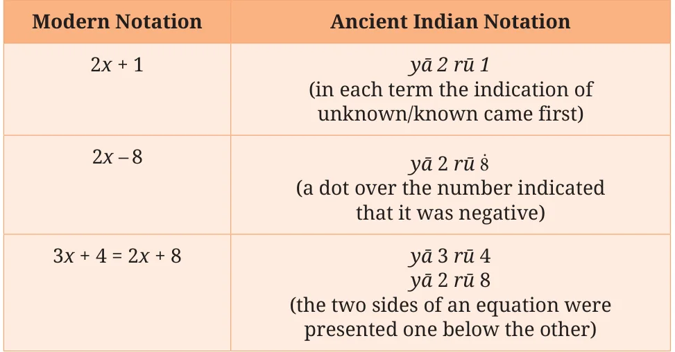
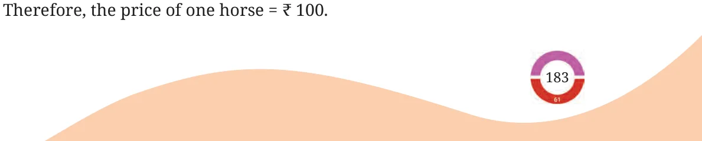

Forming expressions using symbols and solving equations with such expressions was an important component of mathematical explorations in ancient India. This area of mathematics was termed bījagaṇita, also now known as algebra. The word bīja means seed. Just as a tree is hidden inside a seed, the answer to a problem is hidden inside an unknown number. Solving the problem is like helping the tree grow - step by step, we discover what is hidden. We have seen Brahmagupta’s contributions to different areas of mathematics like integers and fractions. In Chapter 18 of his book Brāhmasphuṭasiddhānta (628 CE), he also explained how to add, subtract, and multiply unknown numbers using letters - similar to how we use x or y today. This chapter was one of the earliest known works in algebra in history. As renowned mathematician and Fields Medalist David Mumford remarked, ‘Brahmagupta is the key person in the creation of algebra as we know it’. In the 8th century, Indian mathematical ideas were translated into Arabic. They influenced a well-known mathematician named Al-Khwarizmi, who lived in present-day Iraq. Around 825 CE, he wrote a book called Hisab al-jabr wal-muqabala, which means ‘calculation by restoring and balancing’. These ideas spread even further. By the 12th century, Al-Khwarizmi’s book was translated into Latin and brought to Europe, where it became very popular. The word al-jabr from his book gave us the word algebra, which we also still use today. Similar to how we use letters from the alphabet today to represent unknowns, ancient Indian mathematicians from the time of Brahmagupta used distinct symbols like yā, kā, nī, pī, lo, etc., for different unknowns. The symbol yā was short for yāvat-tāvat (meaning ‘as much as needed’). Others like kā and nī referred to as the first letters
of the names of colours - kālaka (black), nīlaka (blue), and so on. In contrast to these unknowns, the known quantities in an expression had a specific form (rūpa) and were denoted by rū. Here are some examples of how algebraic expressions in modern notation were written in ancient Indian notation:

Example 16: Bījgaṇita by Bhāskarāchārya (1150 CE) mentions this problem. One man has ₹300 rupees and 6 horses. Another man has 10 horses and a debt of ₹100. If they are equally rich and the price of each horse is the same, tell me the price of one horse.
Solution:
Let price of one horse = ₹ x According to the problem
\(300 + 6x = 10x - 100 300 + 6x + (100) = 10x 400 + 6x = 10x 400 = 10x - 6x 400 = 4 400 \div 4 = 100 =\)

Such problems and solutions were well understood in ancient India. In fact, a very systematic way to solve problems with single unknowns was first proposed by Aryabhata (499 CE) and Brahmagupta has outlined it in his Brāhmasphuṭasiddhānta (628 CE). Let us understand his method. Let us look at a few equations of the following form:
\(5x + 4 = 3x + 8\), or \(3x - 6 = 2x + 4\).
Can we come up with a formula to solve these equations? That is, for the first equation, can we perform some operations using 5, 4, 3, and 8 that will directly give us the solution? Using a similar method, can you solve the second equation using the numbers 3, \(- 6\), 2 and 4? To get a formula, we can generalise equations of this form by taking the four numbers as A, B, C, and D. That is,
Ax \(+ B =\) Cx \(+ D\).
Brahmagupta gives the solution to equations of this form with this formula: \(x = D - BA - C\) .
Using this approach, we can find the solution to the equation:
\(650m + 4000 = 500m + 5050\)
simply by calculating,
\(m = \frac{5050 - 4000}{650 - 500}\) .
Using this formula can you solve this equation \(2x + 3 = 4x + 5\)? Ancient Indian mathematicians were excellent at converting complex mathematical ideas into simple procedures so that everyone could use these procedures to solve problems! Bījagaṇita or algebra is the branch of mathematics that uses letter symbols to solve mathematical problems. We have seen some examples in previous pages. By studying algebra, we learn to generalise patterns - in numbers, shapes, and situations. We express these generalisations using the language of algebra, which is both precise and powerful. Bījagaṇita also gives us a way to justify mathematical claims (like why the sum of two odd numbers is always even) and to solve problems of
The power of algebra was well recognised by ancient Indian mathematicians. We hope you recognise it too - and enjoy using it!